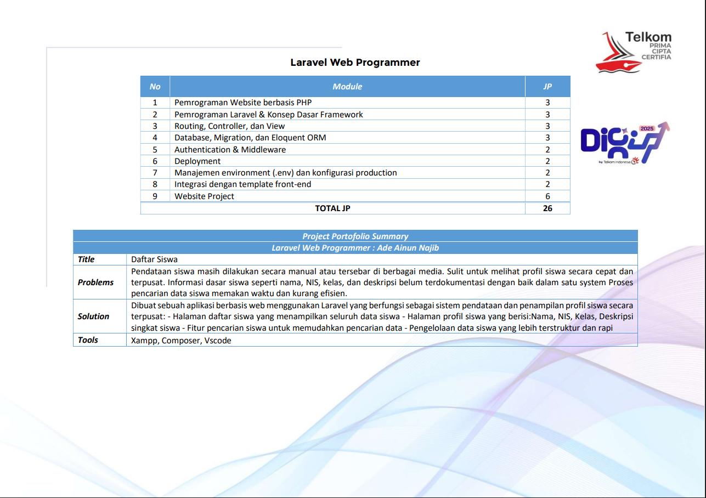

Sertifikat Laravel Web Programmer


Informasi Sertifikat
- Nama: Ade Ainun Najib
- Program: Laravel Web Programmer
- Penyelenggara: Telkom DigiUp 2025
- Grade: Certified
- Tanggal: 22 Desember 2025
Skill yang Dipelajari
✔ PHP Dasar
✔ Laravel Framework
✔ Routing & MVC
✔ Eloquent ORM
✔ Authentication
✔ Deployment
✔ REST API
✔ Database MySQL
Project Portfolio
Membuat aplikasi pendataan siswa berbasis Laravel yang mampu menampilkan data siswa secara terpusat, dilengkapi fitur pencarian, profil siswa, serta manajemen data yang lebih terstruktur dan efisien.